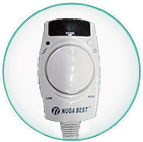
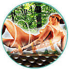
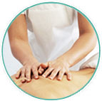

- Model License NO. : 05-232/233
- Size: 1900(W) *800(D) *40(H)
- Weight:12kg / 1set
- Rated Electric Flow : AC 220V / 60Hz
- Power Consumption : 600W
Product Details
NM-2500S is a Single Tourmanium Heat Mattress, popular family product.
It can be used in various ways, on top of the single size bed or on the floor in the living room area for all family members to enjoy the warmth and the health benefits.
NM-2500S is constructed using the special nano ceramic 'Tourmanium' with the enhanced sleep technology, enabling comfort and deep sleep.
NM-2500S is different from heat mats available by other manufacturers, using the patented nano ceramic of NUGA BEST, it provides not only deep heat but other health beneficials such as FIR and Anions
Also it is specially designed to block any harmful Electro-magnetic waves and the water strata effects.
Tourmanium acts as the heat conducting element and also its shape provides acupressure sensations to the users.
Product Features
|  |
CONTROLNM-2500S Control pad sets temperature conveniently with an easy dial control. The temperature can be set between 30 to 70 degrees and the NM-75 automatically switches off after 8 Hours of continual use for safety purposes. |
 |
FAR INFRARED RAYS(FIR)FIR is emitted from the Sun and from our human body in nature. FIR is non-invasive, but reaches deep into the nerves and muscles, providing deep heat therapy and many other health benefits. It boosts the body's healing ability by increasing the metabolism and immune system, helping to detoxify the blood and also promotes weight loss. |
|  |
ANIONSAnions are the negatively charged Ions which are abundant in nature, such places include mountains, forests and under waterfalls. Anions help to relax, refresh and rejuvenate the human body. It helps you to recover faster from exhaustion and fatigue, calm the mind and normalizes the body. |
 |
DEEP HEATWidely used in physio & sports therapies. Its therapeutic effects include: relief of joint stiffness and pain, inflammation reduction, muscle relaxation and improvement of blood circulation. It also boosts the recovery process from athletic injuries, fatigue and tiredness. |
|  |
ACUPRESSUREComplementary technique developed from Acupuncture. Acupressure uses finger pressure to stimulate meridian paths to relax the muscles, removes bodily disfunctions which cause pains in the body. It is an stimulation which is widely used in therapies and also in marital arts. |